Electrical Network Transfer Functions
Control 2.2
Imron Rosyadi
Learning Objectives
By the end of this section, you will be able to:
- Use Laplace-domain impedance and admittance to model R, L, C components.
- Derive transfer functions for simple RLC circuits using:
- Differential equations
- Mesh (loop) analysis
- Nodal analysis
- Voltage division
- Write mesh and node equations for multi-loop / multi-node circuits by inspection.
- Derive transfer functions for inverting and noninverting op-amp circuits.
- Recognize how these circuit transfer functions become building blocks in control systems (e.g., PID controllers).
Big Picture: Why We Care About Transfer Functions in ECE
- A transfer function tells us how an input signal \(U(s)\) affects an output signal \(Y(s)\) in the Laplace domain.
- For circuits, typical inputs: source voltages or currents.
- Typical outputs: voltages across elements, branch currents, etc.
- Once we have \(G(s) = \dfrac{Y(s)}{U(s)}\), we can:
- Analyze stability and transient behavior.
- Design controllers (like PID) around them.
- Simulate entire systems in MATLAB/Simulink.
Tip
Think of the transfer function as a “black-box equation” describing your circuit’s behavior.
Later, multiple black boxes will be connected to form full control systems.
Fundamental R, L, C Relationships (Time Domain)
Variables and Units
Voltage: \(v(t)\) [V]
Current: \(i(t)\) [A]
Charge: \(q(t)\) [C]
Resistor: \(R\) [Ω]
Conductance: \(G = 1/R\) [mho or S]
Capacitor: \(C\) [F]
Inductor: \(L\) [H]
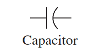
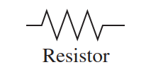
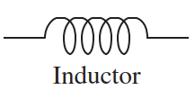
Table: R, L, C Relationships (Zero Initial Conditions)
Time-domain and impedance/admittance relationships
| Component | Voltage–current | Current–voltage | Voltage–charge | Impedance \(Z(s) = \dfrac{V(s)}{I(s)}\) | Admittance \(Y(s) = \dfrac{I(s)}{V(s)}\) |
|---|---|---|---|---|---|
| Capacitor | \(v(t) = \dfrac{1}{C}\displaystyle\int_{0}^{t} i(\tau)\,d\tau\) | \(i(t) = C \dfrac{dv(t)}{dt}\) | \(v(t) = \dfrac{1}{C} q(t)\) | \(\dfrac{1}{Cs}\) | \(Cs\) |
| Resistor | \(v(t) = R\,i(t)\) | \(i(t) = \dfrac{1}{R} v(t)\) | \(v(t) = R \dfrac{dq(t)}{dt}\) | \(R\) | \(\dfrac{1}{R} = G\) |
| Inductor | \(v(t) = L \dfrac{di(t)}{dt}\) | \(i(t) = \dfrac{1}{L}\displaystyle\int_{0}^{t} v(\tau)\,d\tau\) | \(v(t) = L \dfrac{d^{2}q(t)}{dt^{2}}\) | \(Ls\) | \(\dfrac{1}{Ls}\) |
Important
Zero initial conditions are assumed for the impedance formulas. If \(i(0^-)\) or \(v(0^-)\) is nonzero, extra terms appear in the Laplace transform.
From Circuits to Transfer Functions: Overall Workflow
- Choose input and output variables.
- Use Kirchhoff’s laws (KVL or KCL) to write time-domain equations.
- Convert to differential / integral equations if needed.
- Apply Laplace transform (assume zero initial conditions).
- Solve algebraically for \(\dfrac{\text{Output}(s)}{\text{Input}(s)}\).
Alternative shortcut:
- Replace elements by impedances \(Z(s)\) (or admittances \(Y(s)\)).
- Work entirely in the Laplace domain using KVL/KCL and circuit techniques (mesh, nodal, voltage division).
Example 2.6 – Series RLC: Circuit and Goal
Problem
Circuit: series RLC with input voltage \(v(t)\) and output \(v_C(t)\) across the capacitor.
Find transfer function:
\[ \frac{V_C(s)}{V(s)} \]
Assume zero initial conditions.
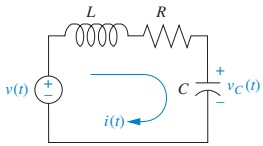
Example 2.6 – Step 1: KVL and Integro-Differential Equation
Using KVL around the loop:
\[ L\frac{di(t)}{dt} + R i(t) + \frac{1}{C}\int_{0}^{t} i(\tau)\,d\tau = v(t) \]
Use current–charge relationship:
\[ i(t) = \frac{dq(t)}{dt} \]
Substitute into KVL:
\[ L\frac{d^{2}q(t)}{dt^{2}} + R\frac{dq(t)}{dt} + \frac{1}{C}q(t) = v(t) \]
Example 2.6 – Step 2: Express in Terms of Capacitor Voltage
For the capacitor, voltage–charge relationship:
\[ q(t) = C\,v_C(t) \]
Substitute into the ODE:
\[ LC\frac{d^{2}v_C(t)}{dt^{2}} + RC\frac{dv_C(t)}{dt} + v_C(t) = v(t) \]
Now both input and output are voltages, which is convenient for transfer functions.
Example 2.6 – Step 3: Laplace Transform and Transfer Function
Take Laplace transform (zero initial conditions):
\[ LC s^{2} V_C(s) + RC s V_C(s) + V_C(s) = V(s) \]
Factor \(V_C(s)\):
\[ (LC s^{2} + RC s + 1)V_C(s) = V(s) \]
Solve for transfer function:
\[ \frac{V_C(s)}{V(s)} = \frac{1}{LC s^{2} + RC s + 1} = \frac{\frac{1}{LC}}{s^{2} + \frac{R}{L}s + \frac{1}{LC}} \]
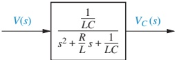
Impedance in the Laplace Domain
Take Laplace transforms of time-domain voltage–current relations (zero initial conditions):
- Capacitor:
\[ v(t) = \frac{1}{C}\int_{0}^{t} i(\tau)\,d\tau \quad \Rightarrow \quad V(s) = \frac{1}{Cs}I(s) \]
- Resistor:
\[ v(t) = R i(t) \quad \Rightarrow \quad V(s) = R I(s) \]
- Inductor:
\[ v(t) = L \frac{di(t)}{dt} \quad \Rightarrow \quad V(s) = Ls I(s) \]
Define impedance:
\[ Z(s) \equiv \frac{V(s)}{I(s)} \]
Thus:
- \(Z_C(s) = \dfrac{1}{Cs}\)
- \(Z_R(s) = R\)
- \(Z_L(s) = Ls\)
Note
Impedance generalizes resistance to dynamic components (C and L). It captures frequency-dependent behavior in a single algebraic expression.
Transforming the RLC Circuit to the \(s\)-Domain
Starting from the RLC loop equation in the \(s\)-domain:
\[ \left(Ls + R + \frac{1}{Cs}\right) I(s) = V(s) \]
This has the form:
\[ [\text{Sum of impedances}]\,I(s) = [\text{Sum of applied voltages}] \]
We can draw the transformed circuit by replacing each element with its impedance:
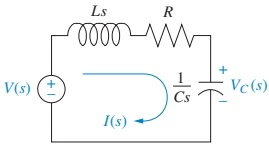
Steps to build the transformed circuit:
- Replace all time functions \(v(t)\), \(i(t)\), etc. with \(V(s)\), \(I(s)\), etc.
- Replace each component by its impedance \(Z(s)\).
Example 2.7 – Same RLC, Mesh (Loop) Analysis in \(s\)-Domain
From Figure 2.5:
KVL in \(s\)-domain:
\[ \left(Ls + R + \frac{1}{Cs}\right) I(s) = V(s) \]
Solve for current:
\[ \frac{I(s)}{V(s)} = \frac{1}{Ls + R + \frac{1}{Cs}} \]
Capacitor voltage:
\[ V_C(s) = I(s) \cdot Z_C(s) = I(s)\cdot \frac{1}{Cs} \]
Therefore:
\[ \frac{V_C(s)}{V(s)} = \frac{1}{Cs}\cdot \frac{1}{Ls + R + \frac{1}{Cs}} \]
Algebraic simplification recovers the same transfer function as in Example 2.6.
Tip
By working directly with \(Z(s)\), we bypass writing and transforming the differential equation. This becomes essential for more complex networks.
Example 2.8 – Single Node via Nodal Analysis
Use Figure 2.5 again, but now apply KCL at the node with voltage \(V_C(s)\).
Assume:
- Currents leaving the node are positive, entering are negative.
Currents:
- Through capacitor: \(\displaystyle I_C(s) = \frac{V_C(s)}{1/(Cs)} = Cs\,V_C(s)\)
- Through \(R\)–\(L\) series branch (from \(V_C\) to source node at \(V\)):
\[ I_{RL}(s) = \frac{V_C(s) - V(s)}{R + Ls} \]
KCL at node \(V_C(s)\) (sum of leaving currents = 0):
\[ \frac{V_C(s)}{1/Cs} + \frac{V_C(s) - V(s)}{R + Ls} = 0 \]
Solve this equation for \(\dfrac{V_C(s)}{V(s)}\); the result again matches Example 2.6.
Example 2.9 – Voltage Division in the \(s\)-Domain
Same RLC transformed circuit: series combination of \(Z_L(s)\), \(Z_R(s)\), and \(Z_C(s)\).
Voltage division:
\[ V_C(s) = \frac{Z_C(s)}{Z_L(s) + Z_R(s) + Z_C(s)} \, V(s) = \frac{\dfrac{1}{Cs}}{Ls + R + \dfrac{1}{Cs}}\,V(s) \]
Thus:
\[ \frac{V_C(s)}{V(s)} = \frac{1/Cs}{Ls + R + 1/Cs} \]
Algebra gives the same transfer function as before.
Note
Three different methods (ODE, mesh, nodal/voltage division) all give the same \(G(s)\). Choosing the fastest correct method is a key engineering skill.
Moving to Complex Circuits – Mesh vs. Nodal
For multi-loop networks, direct ODE writing becomes painful.
Two scalable strategies:
- Mesh analysis (KVL)
- Unknowns: loop currents.
- Best when fewer loops than nodes.
- Nodal analysis (KCL)
- Unknowns: node voltages.
- Best when fewer nodes than loops, especially with many current sources.
Both reduce to solving simultaneous algebraic equations in \(s\).
Example 2.10 – Two-Loop Transfer Function via Mesh Analysis
Given
- Network of Figure 2.6(a).
- Input: \(V(s)\).
- Output: loop 2 current \(I_2(s)\).
Goal
\[ G(s) = \frac{I_2(s)}{V(s)} \]
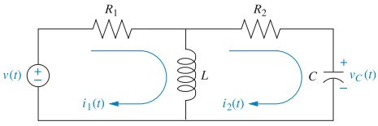
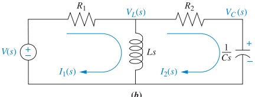
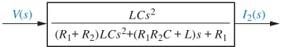
Example 2.10 – Mesh Equations
Assume mesh currents \(I_1(s)\) and \(I_2(s)\) as shown.
Mesh 1 (around left loop):
\[ R_1 I_1(s) + Ls I_1(s) - Ls I_2(s) = V(s) \]
Mesh 2 (around right loop):
\[ Ls I_2(s) + R_2 I_2(s) + \frac{1}{Cs} I_2(s) - Ls I_1(s) = 0 \]
Combine terms:
\[ (R_1 + Ls) I_1(s) - Ls I_2(s) = V(s) \]
\[ - Ls I_1(s) + \left(Ls + R_2 + \frac{1}{Cs}\right) I_2(s) = 0 \]
Example 2.10 – Solving by Cramer’s Rule
Write the system in matrix form:
\[ \begin{bmatrix} R_1 + Ls & -Ls \\ -Ls & Ls + R_2 + \dfrac{1}{Cs} \end{bmatrix} \begin{bmatrix} I_1(s) \\ I_2(s) \end{bmatrix} = \begin{bmatrix} V(s) \\ 0 \end{bmatrix} \]
Let the determinant:
\[ \Delta = \begin{vmatrix} R_1 + Ls & -Ls \\ -Ls & Ls + R_2 + \dfrac{1}{Cs} \end{vmatrix} \]
For \(I_2(s)\), Cramer’s Rule:
\[ I_2(s) = \frac{ \begin{vmatrix} R_1 + Ls & V(s) \\ -Ls & 0 \end{vmatrix} }{\Delta} = \frac{Ls\,V(s)}{\Delta} \]
So:
\[ G(s) = \frac{I_2(s)}{V(s)} = \frac{Ls}{\Delta} \]
Carrying out determinant algebra yields:
\[ G(s) = \frac{LC s^{2}}{(R_1 + R_2)LC s^{2} + (R_1 R_2 C + L)s + R_1} \]
(as in Figure 2.6(c)).
Mesh-Equation Pattern (Two Loops)
The general form of the two-mesh equations observed:
\[ \left[\text{Sum of impedances around Mesh 1}\right] I_1(s) - \left[\text{Sum of common impedances}\right] I_2(s) = \left[\text{Sum of applied voltages around Mesh 1}\right] \]
\[ - \left[\text{Sum of common impedances}\right] I_1(s) + \left[\text{Sum of impedances around Mesh 2}\right] I_2(s) = \left[\text{Sum of applied voltages around Mesh 2}\right] \]
Recognizing this structure lets you write mesh equations by inspection without rederiving each term.
Tip
Inspection rule for mesh \(k\):
- Diagonal term: sum of all impedances in that mesh.
- Off-diagonal term: negative sum of impedances shared with the other mesh.
Nodal Analysis and Admittance
Define admittance:
\[ Y(s) = \frac{1}{Z(s)} = \frac{I(s)}{V(s)} \]
For basic elements:
- Capacitor: \(Y_C(s) = Cs\)
- Resistor: \(Y_R(s) = 1/R = G\)
- Inductor: \(Y_L(s) = 1/(Ls)\)
Using admittance can make KCL equations more compact, especially when multiple parallel branches are present.
Example 2.11 – Transfer Function via Nodal Analysis
Use the transformed circuit of Figure 2.6(b).
Nodes:
- Node at inductor: \(V_L(s)\)
- Node at capacitor: \(V_C(s)\)
KCL at \(V_L(s)\): sum of currents leaving node = 0:
\[ \frac{V_L(s) - V(s)}{R_1} + \frac{V_L(s)}{Ls} + \frac{V_L(s) - V_C(s)}{R_2} = 0 \]
KCL at \(V_C(s)\):
\[ Cs\,V_C(s) + \frac{V_C(s) - V_L(s)}{R_2} = 0 \]
Express resistances as conductances \(G_1 = 1/R_1\), \(G_2 = 1/R_2\):
\[ \left(G_1 + G_2 + \frac{1}{Ls}\right) V_L(s) - G_2 V_C(s) = G_1 V(s) \]
\[ - G_2 V_L(s) + (G_2 + Cs) V_C(s) = 0 \]
Solve simultaneously for \(V_C(s)/V(s)\):
\[ \frac{V_C(s)}{V(s)} = \frac{\dfrac{G_1 G_2}{C} s}{ (G_1 + G_2) s^{2} + \dfrac{G_1 G_2 L + C}{LC} s + \dfrac{G_2}{LC} } \]
(as shown in Figure 2.7).
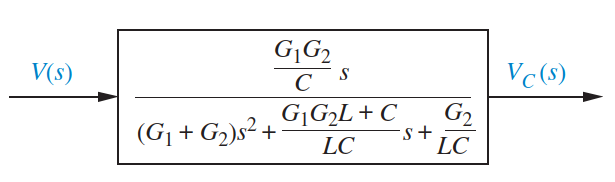
Norton Equivalent and Current-Source View
Sometimes nodal analysis is simpler if we convert voltage sources in series with impedances into current sources in parallel with admittances (Norton’s theorem).
- Voltage source \(V(s)\) in series with \(Z_s(s)\) \(\Rightarrow\) equivalent current source \(\dfrac{V(s)}{Z_s(s)}\) in parallel with \(Z_s(s)\) (or \(Y_s = 1/Z_s\)).
This leads to nodal equations of the general form:
\[ \left[\text{Sum of admittances connected to Node 1}\right] V_1(s) - \left[\text{Common admittances}\right] V_2(s) = \left[\text{Sum of applied currents at Node 1}\right] \]
…and similarly for Node 2.
Example 2.12 – Nodal Analysis with Current Sources
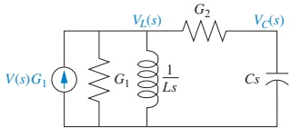
- Convert all impedances to admittances (\(G_1\), \(G_2\), \(Cs\), \(1/(Ls)\)).
- Convert series voltage sources to equivalent current sources.
KCL at \(V_L(s)\):
\[ G_1 V_L(s) + \frac{1}{Ls} V_L(s) + G_2\bigl[V_L(s) - V_C(s)\bigr] = G_1 V(s) \]
KCL at \(V_C(s)\):
\[ Cs\,V_C(s) + G_2\bigl[V_C(s) - V_L(s)\bigr] = 0 \]
These are algebraically identical to the equations in Example 2.11, thus yielding the same \(V_C(s)/V(s)\).
Tip
Pattern for node equations:
- Diagonal term (for node \(k\)): sum of admittances connected to node \(k\).
- Off-diagonal: negative sum of admittances common to nodes \(k\) and \(\ell\).
Example 2.13 – Mesh Equations by Inspection (Three Loops)
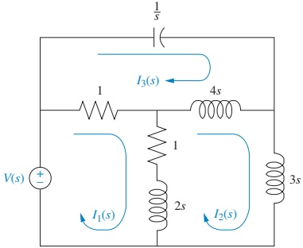
Goal: Write, but do not solve, the mesh equations.
General structure for Mesh 1:
\[ \bigl[\text{Sum of impedances around Mesh 1}\bigr] I_1(s) - \bigl[\text{Common impedances (1–2)}\bigr] I_2(s) - \bigl[\text{Common impedances (1–3)}\bigr] I_3(s) = \bigl[\text{Sum of applied voltages around Mesh 1}\bigr] \]
Similarly for Meshes 2 and 3.
After substituting values from Figure 2.9, we obtain:
Mesh 1:
\[ (2s + 2) I_1(s) - (2s + 1) I_2(s) - I_3(s) = V(s) \]
Mesh 2:
\[ -(2s + 1) I_1(s) + (9s + 1) I_2(s) - 4s\,I_3(s) = 0 \]
Mesh 3:
\[ - I_1(s) - 4s\,I_2(s) + \left(4s + 1 + \frac{1}{s}\right) I_3(s) = 0 \]
These can be solved for any desired transfer function, e.g., \(I_3(s)/V(s)\).
Operational Amplifiers in Control Systems
An operational amplifier (op-amp) is used to implement transfer functions electronically.
Ideal op-amp assumptions:
- Differential input: \(v_2(t) - v_1(t)\) drives the amplifier.
- Input impedance \(Z_i \to \infty\) (no input current).
- Output impedance \(Z_o \to 0\) (ideal voltage source behavior).
- Open-loop gain \(A \to \infty\) (very large).
Basic relationship:
\[ v_o(t) = A \bigl(v_2(t) - v_1(t)\bigr) \]
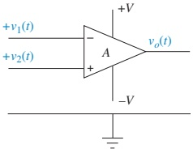
Inverting Op-Amp Configuration
If the non-inverting input is grounded (\(v_2 = 0\)), we get an inverting amplifier:
\[ v_o(t) = -A v_1(t) \]
With impedances \(Z_1(s)\) and \(Z_2(s)\) connected as in Figure 2.10(c):
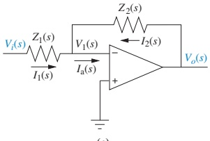
Key consequences of ideal assumptions:
- Input current \(I_a(s) = 0\) (no current into op-amp input).
- Therefore, \(I_1(s) = -I_2(s)\) through \(Z_1\) and \(Z_2\).
- Large \(A\) forces \(v_1(t) \approx 0\) (virtual ground).
So:
\[ I_1(s) = \frac{V_i(s)}{Z_1(s)}, \quad I_2(s) = \frac{V_o(s)}{Z_2(s)} \]
From \(I_1 = -I_2\):
\[ \frac{V_o(s)}{Z_2(s)} = -\frac{V_i(s)}{Z_1(s)} \Rightarrow \frac{V_o(s)}{V_i(s)} = -\frac{Z_2(s)}{Z_1(s)} \]
Note
Inverting op-amp transfer function:
\[ G(s) = \frac{V_o(s)}{V_i(s)} = -\frac{Z_2(s)}{Z_1(s)} \]
Example 2.14 – Inverting Op-Amp as a PID Controller
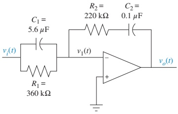
We know:
\[ \frac{V_o(s)}{V_i(s)} = -\frac{Z_2(s)}{Z_1(s)} \]
Compute \(Z_1(s)\): parallel \(R_1\) and \(C_1\):
- Admittances in parallel add: \(Y_1(s) = C_1 s + \dfrac{1}{R_1}\).
- Therefore:
\[ Z_1(s) = \frac{1}{C_1 s + \dfrac{1}{R_1}} = \frac{1}{C_1 s + G_1} \]
(Numerical combination gives: \(Z_1(s) = \dfrac{360\times 10^{3}}{2.016 s + 1}\) in the text.)
Compute \(Z_2(s)\): series \(R_2\) and \(C_2\):
\[ Z_2(s) = R_2 + \frac{1}{C_2 s} \]
Plug into \(-Z_2/Z_1\) and simplify:
\[ \frac{V_o(s)}{V_i(s)} = -1.232 \frac{s^{2} + 45.95 s + 22.55}{s} \]
This is of the form:
\[ K\left( s + \frac{\text{something}}{s} + 1 \right) \]
which corresponds to a PID (Proportional–Integral–Derivative) controller.
Noninverting Op-Amp Configuration
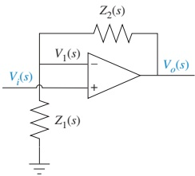
- Input \(V_i(s)\) is applied to the non-inverting terminal.
- Feedback network: \(Z_1(s)\)–\(Z_2(s)\) forming a voltage divider.
Op-amp equation:
\[ V_o(s) = A\bigl(V_i(s) - V_1(s)\bigr) \]
Noninverting Op-Amp Configuration
By voltage division:
\[ V_1(s) = \frac{Z_1(s)}{Z_1(s) + Z_2(s)} V_o(s) \]
Substitute into op-amp equation:
\[ V_o(s) = A\left[V_i(s) - \frac{Z_1}{Z_1 + Z_2} V_o(s)\right] \]
Rearrange and solve for \(V_o/V_i\):
\[ \frac{V_o(s)}{V_i(s)} = \frac{A}{1 + A Z_1(s)/(Z_1(s) + Z_2(s))} \]
For large \(A\), the “1” in the denominator is negligible:
\[ \frac{V_o(s)}{V_i(s)} \approx \frac{Z_1(s) + Z_2(s)}{Z_1(s)} \]
Note
Noninverting op-amp transfer function (large \(A\)):
\[ G(s) = \frac{V_o(s)}{V_i(s)} = \frac{Z_1(s) + Z_2(s)}{Z_1(s)} \]
Example 2.15 – Noninverting Op-Amp with R–C Networks
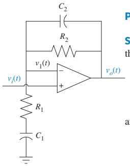
Given:
- \(Z_1(s) = R_1 + \dfrac{1}{C_1 s}\) (series \(R_1\) and \(C_1\)).
- \(Z_2(s) = \dfrac{R_2 \bigl(1/(C_2 s)\bigr)}{R_2 + 1/(C_2 s)}\) (parallel \(R_2\) and \(C_2\)).
Use:
\[ \frac{V_o(s)}{V_i(s)} = \frac{Z_1(s) + Z_2(s)}{Z_1(s)} \]
After substituting and simplifying:
\[ \frac{V_o(s)}{V_i(s)} = \frac{C_2 C_1 R_2 R_1 s^{2} + (C_2 R_2 + C_1 R_2 + C_1 R_1)s + 1} {C_2 C_1 R_2 R_1 s^{2} + (C_2 R_2 + C_1 R_1)s + 1} \]
Skill-Assessment Example – Mesh vs. Nodal Consistency
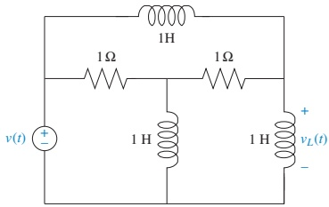
Problem:
Find \(G(s) = V_L(s)/V(s)\) using:
- Mesh analysis (KVL in \(s\)-domain).
- Nodal analysis (KCL in \(s\)-domain).
Show both methods give:
\[ \frac{V_L(s)}{V(s)} = \frac{s^{2} + 2s + 1}{s^{2} + 5s + 2} \]
Tip
Try both methods yourself: - Mesh: define loop currents, write equations by inspection. - Nodal: select unknown node voltages, write KCL using admittances.
This is great practice for exam-style problems.
Skill-Assessment Example – Simple Op-Amp Transfer Functions
Given:
- \(Z_1(s)\) = impedance of a 10 μF capacitor: \(Z_1(s) = \dfrac{1}{C s} = \dfrac{1}{10\times 10^{-6} s} = \dfrac{10^5}{s}\).
- \(Z_2(s)\) = impedance of a 100 kΩ resistor: \(Z_2(s) = 10^5\ \Omega\).
- Inverting amplifier (Figure 2.10(c)):
\[ G(s) = \frac{V_o(s)}{V_i(s)} = -\frac{Z_2}{Z_1} = -\frac{10^5}{10^5/s} = -s \]
- Noninverting amplifier (Figure 2.12):
\[ G(s) = \frac{Z_1 + Z_2}{Z_1} = \frac{\dfrac{10^5}{s} + 10^5}{\dfrac{10^5}{s}} = s + 1 \]
Note
Result:
- Inverting configuration behaves like a differentiator: \(G(s) = -s\).
- Noninverting configuration behaves like a differentiator plus proportional term: \(G(s) = s + 1\).
Real-World ECE Application: RLC Filters and Sensors
- A series RLC circuit like Example 2.6 can be used as a band-pass filter in audio or communication systems.
- The transfer function \(V_C(s)/V(s)\) shapes how different frequencies are passed or attenuated.
- In control systems, the same RLC can be part of a sensor conditioning circuit, where \(v_C(t)\) represents a measured physical quantity (e.g., strain gauge + filter).
- Designing the resistor, inductor, and capacitor values sets the “dynamic response” (rise time, overshoot) of the measured signal feeding the controller.
Summary / Key Points
- R, L, C elements have simple Laplace-domain impedances: \(Z_R = R\), \(Z_L = Ls\), \(Z_C = 1/(Cs)\).
- We can model circuits in the \(s\)-domain by replacing each element with \(Z(s)\) and applying KVL/KCL just like in DC circuits.
- For simple circuits, transfer functions can be obtained via:
- Differential equation → Laplace transform.
- Mesh analysis (KVL in \(s\)-domain).
- Nodal analysis (KCL in \(s\)-domain).
- Voltage division using impedances.
- For multi-loop / multi-node circuits:
- Mesh equations: diagonal terms = sum of mesh impedances; off-diagonals = negative common impedances.
- Node equations: diagonal terms = sum of admittances at node; off-diagonals = negative common admittances.
- Op-amp circuits (inverting and noninverting) realize transfer functions:
- Inverting: \(G(s) = -Z_2(s)/Z_1(s)\).
- Noninverting (large \(A\)): \(G(s) = [Z_1(s)+Z_2(s)]/Z_1(s)\).
- These circuit transfer functions become building blocks for controllers (e.g., PID) and analog filters in control systems.
Key Formulas Summary
R, L, C Impedances and Admittances
- Resistor:
\[ Z_R(s) = R, \quad Y_R(s) = \frac{1}{R} = G \]
- Capacitor:
\[ Z_C(s) = \frac{1}{Cs}, \quad Y_C(s) = Cs \]
- Inductor:
\[ Z_L(s) = Ls, \quad Y_L(s) = \frac{1}{Ls} \]
Generic Transfer Function Definition
- For input \(U(s)\) and output \(Y(s)\):
\[ G(s) = \frac{Y(s)}{U(s)} \]
Series RLC (capacitor output) – Example 2.6
\[ \frac{V_C(s)}{V(s)} = \frac{1/LC}{s^{2} + \dfrac{R}{L}s + \dfrac{1}{LC}} \]
Series Impedances in Loop Equation
- General KVL in \(s\)-domain:
\[ \bigl[\text{Sum of impedances}\bigr] I(s) = \bigl[\text{Sum of sources}\bigr] \]
Two-Mesh Pattern
\[ \begin{bmatrix} \sum Z_{\text{Mesh 1}} & -\sum Z_{\text{common}} \\ -\sum Z_{\text{common}} & \sum Z_{\text{Mesh 2}} \end{bmatrix} \begin{bmatrix} I_1(s) \\ I_2(s) \end{bmatrix} = \begin{bmatrix} \sum V_{\text{Mesh 1}} \\ \sum V_{\text{Mesh 2}} \end{bmatrix} \]
Two-Node Pattern (Admittances)
\[ \begin{bmatrix} \sum Y_{\text{Node 1}} & -\sum Y_{\text{common}} \\ -\sum Y_{\text{common}} & \sum Y_{\text{Node 2}} \end{bmatrix} \begin{bmatrix} V_1(s) \\ V_2(s) \end{bmatrix} = \begin{bmatrix} \sum I_{\text{Node 1}} \\ \sum I_{\text{Node 2}} \end{bmatrix} \]
Op-Amp Transfer Functions
- Inverting configuration:
\[ \frac{V_o(s)}{V_i(s)} = -\frac{Z_2(s)}{Z_1(s)} \]
- Noninverting configuration (large \(A\)):
\[ \frac{V_o(s)}{V_i(s)} = \frac{Z_1(s) + Z_2(s)}{Z_1(s)} \]
Interactive Deck
Interactive Agenda
- Explore R, L, C impedances in Python (Pyodide).
- Experiment with pole locations of an RLC circuit and see their effect on \(G(s)\).
- Compare mesh vs. nodal analysis numerically.
- Interactively explore inverting and noninverting op-amp transfer functions.
Interactive: R, L, C Impedance Calculator
Use this live Python block to calculate impedances for R, L, C at a chosen value of \(s = \sigma + j\omega\).
Reactive: Visualizing R, L, C Magnitudes vs Frequency
Use the sliders to change \(R\), \(L\), and \(C\) values, and see how the impedance magnitudes vary with frequency.
Interactive: Series RLC Transfer Function Coefficients
Recall for the series RLC with capacitor voltage output (Example 2.6):
\[ \frac{V_C(s)}{V(s)} = \frac{1/LC}{s^{2} + \dfrac{R}{L}s + \dfrac{1}{LC}} \]
Use Python to compute the denominator coefficients for your chosen \(R\), \(L\), \(C\).
Reactive: Poles of the Series RLC Transfer Function
Interactively vary \(R\), \(L\), and \(C\), and observe the pole locations of:
\[ G(s) = \frac{V_C(s)}{V(s)} = \frac{1/LC}{s^{2} + \frac{R}{L}s + \frac{1}{LC}} \]
Interactive: Mesh vs. Nodal Equation Coefficients (Conceptual)
For the two-loop mesh system in Example 2.10, the equations:
\[ (R_1 + Ls) I_1(s) - Ls I_2(s) = V(s) \]
\[ - Ls I_1(s) + \left(Ls + R_2 + \frac{1}{Cs}\right) I_2(s) = 0 \]
Use Python to build the coefficient matrix symbolically for selected \(R_1\), \(R_2\), \(L\), \(C\) at a particular \(s\).
Reactive: Inverting Op-Amp – Frequency Response Magnitude
For an inverting op-amp:
\[ G(s) = -\frac{Z_2(s)}{Z_1(s)} \]
Here, choose:
- \(Z_1\) as a capacitor \(C_1\) (pure integrator).
- \(Z_2\) as a resistor \(R_2\).
Then:
\[ G(s) = -R_2 C_1 s \]
Magnitude grows linearly with \(\omega\). Explore this behavior interactively.
Interactive: Noninverting Op-Amp – DC Gain with Resistive Network
For large-\(A\) noninverting op-amp:
\[ G(s) = \frac{Z_1 + Z_2}{Z_1} \]
Let \(Z_1 = R_1\) and \(Z_2 = R_2\) (purely resistive):
\[ G = 1 + \frac{R_2}{R_1} \]
Use Python to compute the DC gain for selected resistor values.
Reactive: Noninverting Op-Amp with Simple RC Feedback
Make \(Z_1 = R_1 + 1/(C_1 s)\) and \(Z_2 = R_2\) (for simplicity). Then approximately:
\[ G(s) = \frac{Z_1 + Z_2}{Z_1} = 1 + \frac{R_2}{R_1 + 1/(C_1 s)} \]
Interactively explore \(|G(j\omega)|\) as \(R_1\), \(R_2\), and \(C_1\) vary.
Wrap-Up Interactive Check
Use the block below as a quick self-check: given \(R\), \(L\), \(C\) and the form
\[ G(s) = \frac{1/LC}{s^{2} + \frac{R}{L}s + \frac{1}{LC}}, \]
numerically evaluate \(|G(j\omega)|\) at a chosen frequency.